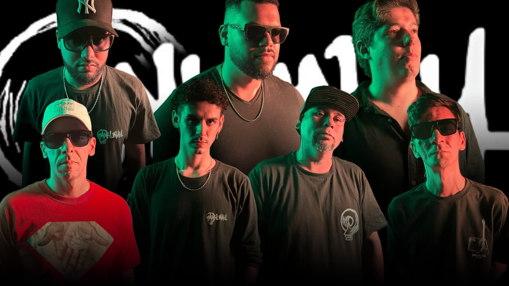

NOSSA HISTÓRIA
Formada em Santos, a banda Anyway começou a tomar forma em meados de 2019, quando os futuros membros começaram a conversar sobre a ideia nas redes sociais. Foi somente em 2020, com o primeiro ensaio, que o projeto se concretizou. Inluenciados pelo Nu Metal das bandas icônicas dos anos 2000, Anyway trouxe uma nova energia à cena musical.
Com riffs pesados, letras profundas e uma paixão inabalável pela música, Anyway está pronta para deixar sua marca na cena do nu metal e além. Cada novo lançamento é uma prova do compromisso da banda com a inovação e a expressão artı́stica, sempre em movimento e sempre evoluindo.
A banda está trabalhando em um EP autoral, já com dois singles lançadas nas plataformas musicais (Visão Ilusória e Insônia), e em breve um próximo Single "Noite de pesadelo".
INTEGRANTES
CONTATO
Fale Connosco
Para contratação de shows, eventos, entrevistas ou parcerias, entre em contacto direto através do nosso WhatsApp ou envie-nos um email.